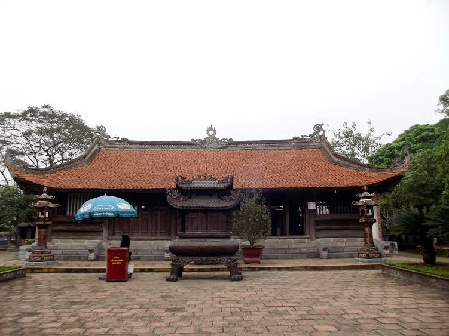
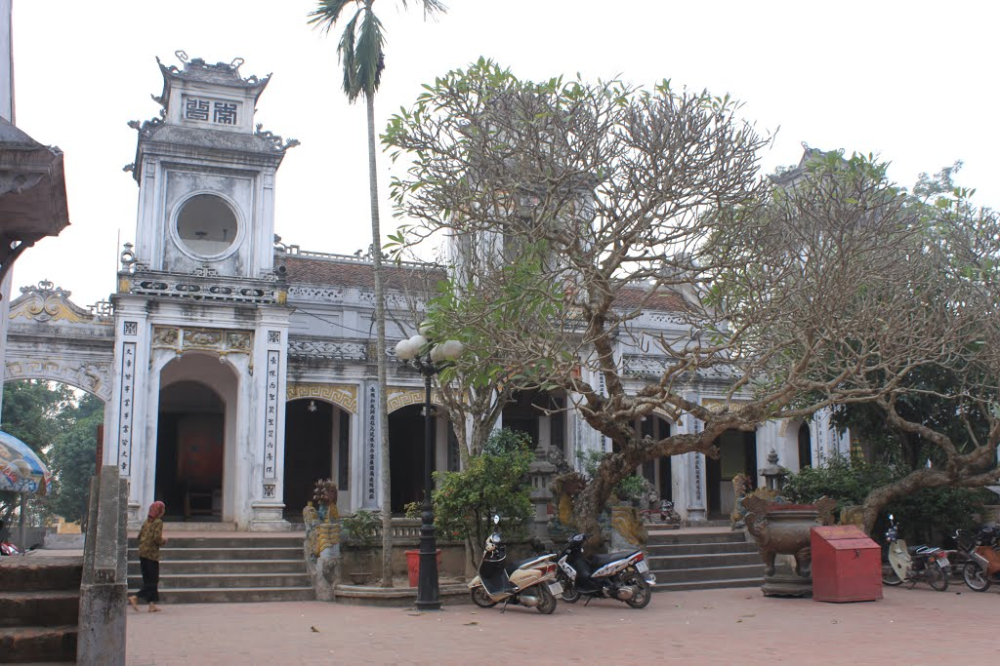

Đền Trần
Đền Trần (陳廟 - Trần Miếu) là một quần thể đền thờ tại đường Trần Thừa, phường Lộc Vượng, thành phố Nam Định (sát quốc lộ 10), là nơi thờ các vua Trần cùng các quan lại có công phù tá nhà Trần. Đền Trần được xây dựng từ năm 1695, trên nền Thái miếu cũ của nhà Trần đã bị quân Minh phá hủy vào thế kỷ XV. Đền Trần bao gồm 3 công trình kiến trúc chính là đền Thiên Trường (hay đền Thượng), đền Cố Trạch (hay đền Hạ) và đền Trùng Hoa. Trước khi vào đền, phải qua hệ thống cổng ngũ môn. Trên cổng ghi các chữ Hán Chính nam môn (正南門 - cổng chính phía nam) và Trần Miếu (陳廟 - Miếu thờ nhà Trần). Qua cổng là một hồ nước hình chữ nhật. Chính giữa phía sau hồ nước là khu đền Thiên Trường. Phía Tây đền Thiên Trường là đền Trùng Hoa, phía Đông là đền Cố Trạch. Cả ba đền đều có kiến trúc chung, và quy mô ngang nhau. Mỗi đền gồm tòa tiền đường 5 gian, tòa trung đường 5 gian và tòa chính tẩm 3 gian. Nối tiền đường và trung đường là kinh đàn (thiêu hương) và 2 gian tả hữu.
Đền Thiên Trường
Đền Thiên Trường được xây trên nền Thái miếu và cung Trùng Quang của nhà Trần mà trước nữa là nhà thờ họ của họ Trần. Cung Trùng Quang là nơi các Thái thượng hoàng nhà Trần sống và làm việc. Đền Trần hiện nay được dân địa phương xây bằng gỗ từ năm Chính Hòa thứ 15 (tức năm 1695). Các năm 1773, 1854, 1895, 1907-1908, đền được mở rộng và xây thêm. Đền Thiên Trường hiện tại gồm có tiền đường, trung đường, chính tẩm, thiêu hương, 2 dãy tả hữu vu, 2 dãy tả hữu ống muống, 2 dãy giải vũ Đông Tây. Tổng cộng có 9 tòa, 31 gian. Khung đền bằng gỗ lim, mái lợp ngói, nền lát gạch. Bệ thờ Công đồng Hoàng đế tại Tiền đường. Tiền đường của đền Thiên Trường gồm 5 gian, dài 13 mét. Có 12 cột cái cùng 12 cột quân, tất cả đều được đặt trên chân tảng bằng đá hình cánh sen có từ thời Trần là chân cột cung Trùng Quang cũ. Tại đây có đặt ban thờ và bài vị của các quan có công lớn phù tá nhà Trần Sau tiền đường là trung đường là nơi thờ 14 vị hoàng đế nhà Trần. Tuy nhiên, không có tượng thờ mà chỉ có bài vị. Trước cửa trung đường có ba cỗ ngai là nơi thờ bái vọng các vị hoàng đế. Sau trung đường là chính tẩm gồm 3 gian. Đây là nơi thờ 4 vị thủy tổ của họ Trần và các phu nhân chính thất ở gian giữa. Các hoàng phi của nhà Trần cũng được đặt bài vị thờ ở 2 gian trái, phải. Tòa thiêu hương (hay kinh đàn) là nơi đặt ban thờ và bài vị của các công thần nhà Trần. Có ban thờ riêng cho các quan văn, và ban thờ riêng cho các quan võ.
Đền Trùng Hoa
Đền Cổ Trạch
Đền Cố Trạch nằm phía Đông của đền Thiên Trường. Nhìn từ sân, là bên phải đền Thiên Trường. Đền Cố Trạch được xây vào năm 1894. Theo bia "Trùng kiến Hưng Đạo thân vương cố trạch bi ký", thì lúc tu sửa đền Thiên Trường năm 21 đời Tự Đức (năm 1868), người ta đào thấy ở phía Đông đền Thiên Trường một mảnh bia vỡ có ghi chữ Hưng Đạo thân vương cố trạch (nhà cũ của Hưng Đạo thân vương). Do đó khi xây đền này vào năm 1894 khánh thành vào năm 1895, đền được đặt tên là Cố Trạch Từ (đền nhà cũ). Đền Hạ là tên thường gọi. Đền Cố Trạch đặt bài vị của Trần Hưng Đạo, gia đình và gia tướng. Tiền đường của đền Cố Trạch là nơi đặt bài vị của 3 gia tướng thân tín của Trần Hưng Đạo, đó là Phạm Ngộ, Phạm Ngũ Lão và Nguyễn Chế Nghĩa. Thiêu hương (kinh đàn) là nơi đặt long đình trong có tượng Trần Hưng Đạo cùng 9 pho tượng Phật. Bên trái đặt bài vị các quan văn. Bên phải đặt bài vị của các quan võ. Gian tả vu là nơi đặt bài vị Trương Hán Siêu, Phạm Thiện Nhân và các bài vị văn thần triều Trần. Gian hữu vu là nơi đặt bài vị võ thần triều Trần, bài vị Trần Công và các thân nhân họ Trần. Tòa trung đường là nơi đặt bài vị và tượng của Trần Hưng Đạo, bài vị của 4 người con trai, của Phạm Ngũ Lão và các tả hữu tướng quân. Tòa chính tẩm là nơi đặt bài vị của cha và mẹ Trần Hưng Đạo, của Trần Hưng Đạo và vợ (công chúa Thiên Thành), của 4 người con trai và 4 người con dâu của Trần Hưng Đạo, của con gái và con rể (Phạm Ngũ Lão).